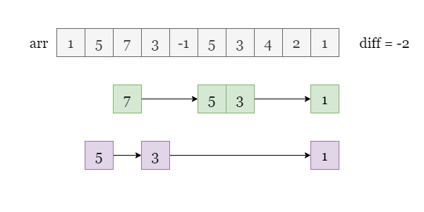
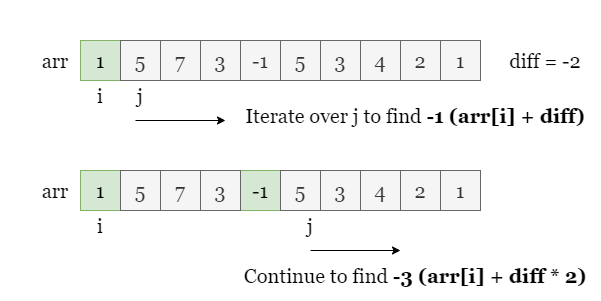
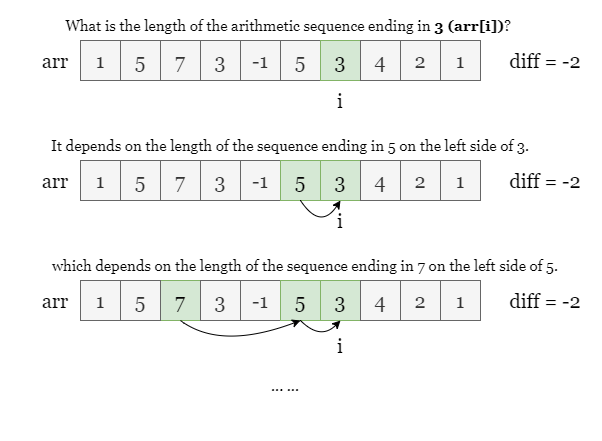

1 / 11
As shown in the picture below, we have found some arithmetic subsequences with a common difference of -2.
The task is to find the length of the longest arithmetic subsequence.

One possible approach to solving this problem is to iterate through each element arr[i], and for each
such arr[i], we look for the longest arithmetic subsequence that starts with arr[i]. We
can simply iterate through the rest of the array starting from arr[i+1], and for each such element
arr[j], check if arr[j] - arr[i] = difference. If it is, we have found the next element
arr[i] + difference of the arithmetic subsequence and we can continue to look for the next element
arr[i] + difference * 2 in the same way.
We keep track of the length of the arithmetic subsequence that we find and update the maximum length found so far.

However, this brute force approach takes O(n2)O(n^2) time, which is likely to exceed the time limit, as we need
to iterate through the rest of the array for each element arr[i].
To improve the time complexity of our solution, we can use dynamic programming (DP). DP is a technique where we solve
subproblems and use their solutions to solve larger problems. In this case, we can use DP to avoid iterating through
the array for each arr[i].
If you are not familiar with dynamic programming, you can refer to our Dynamic Programming Explore Card on LeetCode.
The key idea of the DP approach is to use a hash map dp to store the maximum length of an arithmetic
subsequence that ends with each element in arr. We initialize dp as empty. Then, for each
element arr[i], we check if arr[i] - difference is already present in dp.
If it is, let's say dp[arr[i] - difference] = before_a. It means there exists an arithmetic
subsequence of length before_a that ends with arr[i] - difference. Since we can
append arr[i] to this sequence, we update dp[arr[i]] to be dp[arr[i] -
difference] + 1.
Otherwise, we simply set dp[arr[i]] = 1, as an element on its own is technically an arithmetic
subsequence.
As shown in the picture below, during the iteration, if we want the longest arithmetic subsequence ending with 3,
we need to find the longest arithmetic subsequence ending with 5 previously. If we have saved the
maximum length of a subsequence that ends with each previous element in dp, we can easily look into
dp and find if a subsequence that ends with 5 exists.

Please refer to the slides below as a detailed example:
After iterating through the entire array, we can find the maximum value in dp, which is the length of
the longest arithmetic subsequence in arr, or alternatively we can keep track of the maximum dp[arr[i]]
during the iteration by answer = max(answer, dp[arr[i]])
Initialize an empty hash map dp, set answer = 1.
Iterate over arr, for each index i.
Get before_a, the maximum length of an arithmetic subsequence that ends with arr[i] -
difference:
If arr[i] - difference is in dp, before_a = dp[arr[i] -
difference].
Otherwise, before_a = 0.
Set dp[arr[i]] = before_a + 1, update answer as answer = max(answer,
dp[arr[i]]).
Return answer when the iteration ends.
Java
class Solution {
public int longestSubsequence(int[] arr, int difference) {
Map dp = new HashMap<>();
int answer = 1;
for (int a : arr) {
int beforeA = dp.getOrDefault(a - difference, 0);
dp.put(a, beforeA + 1);
answer = Math.max(answer, dp.get(a));
}
return answer;
}
}
C++
class Solution {
public:
int longestSubsequence(vector& arr, int difference) {
unordered_map dp;
int answer = 1;
for (int a : arr) {
int beforeA = dp.count(a - difference) ? dp[a - difference] : 0;
dp[a] = beforeA + 1;
answer = max(answer, dp[a]);
}
return answer;
}
};
Python3
class Solution:
def longestSubsequence(self, arr: List[int], difference: int) -> int:
dp = {}
answer = 1
for a in arr:
before_a = dp.get(a - difference, 0)
dp[a] = before_a + 1
answer = max(answer, dp[a])
return answer
Let nn
be the length of the input array arr.
Time complexity: O(n)O(n)
arr once, and each hash map lookup and update takes constant
time on average.
Space complexity: O(n)O(n)
arr[i]
in the array, with at most O(n)O(n)
possible different arr[i] values.